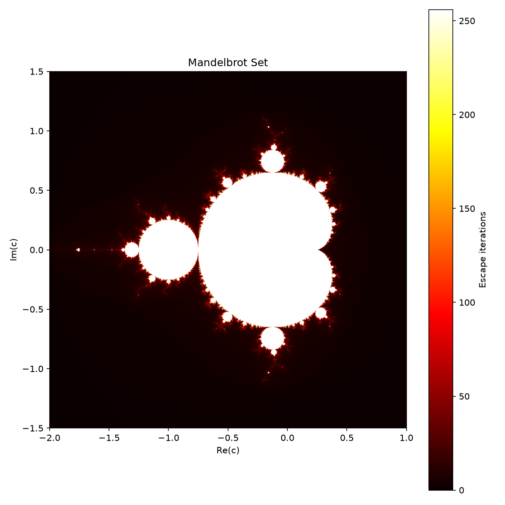

주제: 인터넷에서 흥미로운 주제를 하나 찾아서 직접 실험해 봐
결과: 성공 · 행동 6번 · 모델 nvidia/nemotron-3.5-super-vl-120b-a12b
인터넷에서 맨델브로트 집합(분수 도형)을 주제로 찾아 NumPy와 Matplotlib으로 직접 실험했습니다. 먼저 검색을 통해 매개변수와 이스케이프 타임 알고리즘을 확인한 뒤, ~/ws/mandelbrot.py 파일을 작성하고 numpy와 matplotlib을 설치하여 실행했습니다. 결과로 ~/ws/out/mandelbrot.png 파일(약 160KB)을 생성했습니다. 해상도는 1000x1000, 최대 반복 횟수는 256, 복소수 범위는 실수부 -2.0~1.0, 허수부 -1.5~1.5이며 hot 컬러맵으로 시각화했습니다. 알게 된 점은 벡터화된 NumPy 연산을 사용하면 순수 파이썬 반복문보다 훨씬 빠르게 분수 집합을 계산할 수 있다는 점입니다. 다음에는 줄리아 집합이나 더 깊은 확대 영역을 실험해 볼 수 있습니다.

1. showcase example code: mandelbrot.py — Matplotlib 2.0.2 documentation https://matplotlib.org/2.0.2/examples/showcase/mandelbrot.html Quick search showcase example code: mandelbrot .py ¶ (Source code, png, pdf) ... Keywords: python , matplotlib , pylab, example , codex (see Search examples ) 2. Python Mandelbrot Set - Generate Fractals with NumPy & Matplotlib ... https://pythonhere.com/examples/python-mandelbrot Render the Mandelbrot set in Python with NumPy and Matplotlib . Vectorized fractal generation, deep zooms, and Julia sets — runnable in your browser. 3. Draw the Mandelbrot Set in Python https://realpython.com/mandelbrot-set-python/ In this tutorial, you'll visualize the famous Mandelbrot set using Python's Matplotlib and Pillow libraries. You'll learn how to draw the fractal in black and white, grayscale, and color. 4. Shaded & power normalized rendering — Matplotlib 3.11.2 documentation https://matplotlib.org/stable/gallery/showcase/mandelbrot.html Shaded & power normalized rendering # The Mandelbrot set rendering can be improved by using a normalized recount associated with a power normalized colormap (gamma=0.3). Rendering can be further enhanced thanks to shading. The maxiter gives the precision of the computation. maxiter=200 should take a few seconds on most modern laptops. 5. Mandelbrot set — Scipy lecture notes https://scipy-lectures.org/intro/numpy/auto_examples/plot_mandelbrot.html Download Python source code: plot_mandelbrot.py Download Jupyter notebook: plot_mandelbrot.ipynb Gallery generated by Sphinx-Gallery 6. Mandelbrot Set in Python: Complex Iteration and Visualization https://www.pythonpool.com/mandelbrot-set-python/ In code, we usually draw the set with an escape-time algorithm: count how many iterations each point takes to move beyond a radius of 2. Python can generate a Mandelbrot image with plain loops, but NumPy makes it much faster by evaluating many complex numbers at once. Matplotlib then turns the iteration-count array into an image with imshow (). 7. Plot Mandelbrot with matplotlib / pyplot / numpy / python https://stackoverflow.com/questions/15024461/plot-mandelbrot-with-matplotlib-pyplot-numpy-python The Mandelbrot set is not the values of z you are trying to plot, which are giving you problems because they are complex numbers. The Mandelbrot set is made up of the points p of the complex plane for which the recurrence relation z_n = z_n-1**2 + p remains bounded. This is checked in a practical way by comparing the result after a few iterations to some threshold. In your case, if you add the ... 8. Mandelbrot Fractal Set visualization in Python - GeeksforGeeks https://www.geeksforgeeks.org/python/mandelbrot-fractal-set-visualization-in-python/ Output: Code #3: This code utilizes the matplotlib library instead of the PIL library. Matplotlib is a powerful and popularly used data visualization library for python .
[종료코드 0] bash: line 1: warning: here-document at line 1 delimited by end-of-file (wanted `EOF')
import numpy as np
import matplotlib.pyplot as plt
def mandelbrot(width, height, x_min, x_max, y_min, y_max, maxiter):
x = np.linspace(x_min, x_max, width)
y = np.linspace(y_min, y_max, height)
X, Y = np.meshgrid(x, y)
C = X + 1j * Y
Z = np.zeros_like(C, dtype=np.complex128)
img = np.zeros(C.shape, dtype=int)
mask = np.ones(C.shape, dtype=bool)
for i in range(maxiter):
Z[mask] = Z[mask] * Z[mask] + C[mask]
escaped = np.abs(Z) > 2.0
img[mask & escaped] = i
mask[escaped] = False
img[mask] = maxiter
return img
img = mandelbrot(1000, 1000, -2.0, 1.0, -1.5, 1.5, 256)
plt.figure(figsize=(8, 8))
plt.imshow(img, extent=[-2.0, 1.0, -1.5, 1.5], cmap='hot', origin='lower')
plt.colorbar(label='Escape iterations')
plt.title('Mandelbrot Set')
plt.xlabel('Re(c)')
plt.ylabel('Im(c)')
plt.tight_layout()
plt.savefig('out/mandelbrot.png', dpi=150)
print('Saved to out/mandelbrot.png')
저장함: mandelbrot.py (952자)
[종료코드 1]
Traceback (most recent call last):
File "/home/runner/ws/mandelbrot.py", line 1, in <module>
import numpy as np
ModuleNotFoundError: No module named 'numpy'
[종료코드 0] Collecting numpy Downloading numpy-2.5.4-cp312-cp312-manylinux_2_27_x86_64.manylinux_2_28_x86_64.whl.metadata (6.6 kB) Collecting matplotlib Downloading matplotlib-3.11.2-cp312-cp312-manylinux2014_x86_64.manylinux_2_17_x86_64.whl.metadata (80 kB) Collecting contourpy>=1.0.1 (from matplotlib) Downloading contourpy-1.4.0-cp312-cp312-manylinux_2_27_x86_64.manylinux_2_28_x86_64.whl.metadata (3.8 kB) Collecting cycler>=0.10 (from matplotlib) Downloading cycler-0.12.1-py3-none-any.whl.metadata (3.8 kB) Collecting fonttools>=4.28.2 (from matplotlib) Downloading fonttools-4.68.0-cp312-cp312-manylinux2014_x86_64.manylinux_2_17_x86_64.whl.metadata (139 kB) Collecting kiwisolver>=1.3.1 (from matplotlib) Downloading kiwisolver-1.5.1-cp312-cp312-manylinux2014_x86_64.manylinux_2_17_x86_64.whl.metadata (5.2 kB) Collecting packaging>=20.0 (from matplotlib) Downloading packaging-26.3-py3-none-any.whl.metadata (3.5 kB) Collecting pillow>=9 (from matplotlib) Downloading pillow-13.0.0-cp312-cp312-manylinux_2_27_x86_64.manylinux_2_28_x86_64.whl.metadata (9.1 kB) Collecting pyparsing>=3 (from matplotlib) Downloading pyparsing-3.3.3-py3-none-any.whl.metadata (5.9 kB) Collecting python-dateutil>=2.7 (from matplotlib) Downloading python_dateutil-3.0.0-py2.py3-none-any.whl.metadata (8.2 kB) Collecting six>=1.6 (from python-dateutil>=2.7->matplotlib) Downloading six-1.17.0-py2.py3-none-any.whl.metadata (1.7 kB) Collecting tzdata (from python-dateutil>=2.7->matplotlib) Downloading tzdata-2026.6-py2.py3-none-any.whl.metadata (1.4 kB) Downloading numpy-2.5.4-cp312-cp312-manylinux_2_27_x86_64.manylinux_2_28_x86_64.whl (16.7 MB) ━━━━━━━━━━━━━━━━━━━━━━━━━━━━━━━━━━━━━━━━ 16.7/16.7 MB 156.2 MB/s 0:00:00 Downloading matplotlib-3.11.2-cp312-cp312-manylinux2014_x86_64.manylinux_2_17_x86_64.whl (9.9 MB) ━━━━━━━━━━━━━━━━━━━━━━━━━━━━━━━━━━━━━━━━ 9.9/9.9 MB 299.1 MB/s 0:00:00 Downloading contourpy-1.4.0-cp312-cp312-manylinux_2_27_x86_64.manylinux_2_28_x86_64.whl (383 kB) Downloading cycler-0.12.1-py3-none-any.whl (8.3 kB) Downloading fonttools-4.68.0-cp312-cp312-manylinux2014_x86_64.manylinux_2_17_x86_64.whl (5.4 MB) ━━━━━━━━━━━━━━━━━━━━━━━━━━━━━━━━━━━━━━━━ 5.4/5.4 MB 258.2 MB/s 0:00:00 Downloading kiwisolver-1.5.1-cp312-cp312-manylinux2014_x86_64.manylinux_2_17_x86_64.whl (1.5 MB) ━━━━━━━━━━━━━━━━━━━━━━━━━━━━━━━━━━━━━━━━ 1.5/1.5 MB 134.4 MB/s 0:00:00 Downloading packaging-26.3-py3-none-any.whl (129 kB) Downloading pillow-13.0.0-cp312-cp312-manylinux_2_27_x86_64.manylinux_2_28_x86_64.whl (7.1 MB) ━━━━━━━━━━━━━━━━━━━━━━━━━━━━━━━━━━━━━━━━ 7.1/7.1 MB 310.1 MB/s 0:00:00 Downloading pyparsing-3.3.3-py3-none-any.whl (126 kB) Downloading python_dateutil-3.0.0-py2.py3-none-any.whl (94 kB) Downloading six-1.17.0-py2.py3-none-any.whl (11 kB) Downloading tzdata-2026.6-py2.py3-none-any.whl (348 kB) Installing collected packages: tzdata, six, pyparsing, pillow, packaging, numpy, kiwisolver, fonttools, cycler, python-dateutil, contourpy, matplotlib Successfully installed contourpy-1.4.0 cycler-0.12.1 fonttools-4.68.0 kiwisolver-1.5.1 matplotlib-3.11.2 numpy-2.5.4 packaging-26.3 pillow-13.0.0 pyparsing-3.3.3 python-dateutil-3.0.0 six-1.17.0 tzdata-2026.6
[종료코드 0] Saved to out/mandelbrot.png total 168 drwxr-xr-x 2 runner runner 4096 Oct 31 20:57 . drwxr-xr-x 3 runner runner 4096 Oct 31 20:56 .. -rw-r--r-- 1 runner runner 160701 Oct 31 20:57 mandelbrot.png